28-29
NOVEMBRE
NOVEMBRE
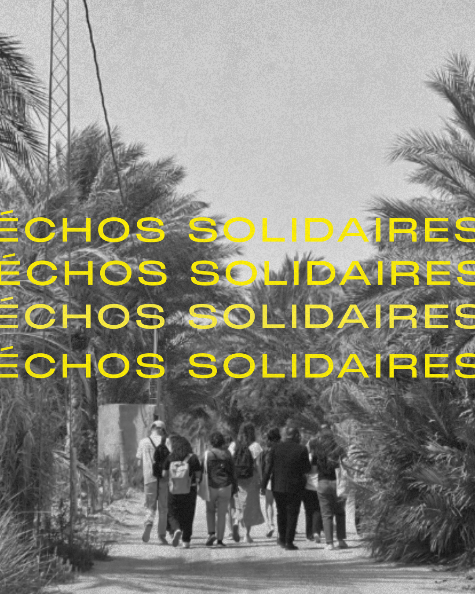
Échos Solidaires – أصداء est né du besoin de créer des espaces communs, où les expériences locales, les recherches et les pratiques associatives se rencontrent.
L’événement cherche à relier ce qui s’invente sur les territoires, à documenter les savoirs et à renforcer les liens entre celles et ceux qui agissent.
En 2025, c’est à Nefta que se tiendra cette nouvelle édition, dédiée à l’adaptation climatique et aux solidarités locales, entre réflexions, expérimentations et moments partagés.

Une matinée pour entrer ensemble dans les enjeux de l’adaptation climatique.
Habitant·es, artisanes, agriculteurs et jeunes prendront d’abord la parole pour partager leurs vécus et observations du changement climatique à Nefta et ailleurs.
Leurs récits seront mis en perspective par des chercheur·es et acteurs publics, dans une lecture croisée des transformations sociales, économiques et environnementales à l’œuvre dans les territoires.
Un moment collectif pour poser un socle commun d’expériences et de connaissances.
Trois ateliers parallèles inviteront chercheur·es, acteur·rices associatif·ves, porteurs d’initiatives, artistes, designers et praticien·nes de l’économie sociale et solidaire à croiser leurs approches.
- Le premier explorera les outils et méthodes qui permettent de mieux comprendre les vulnérabilités territoriales et de produire des savoirs partagés.
- Le deuxième s’appuiera sur des expériences locales pour questionner le “faire ensemble”, les dynamiques collectives et les capacités d’adaptation face aux transformations sociales, économiques et climatiques.
- Le troisième ouvrira un espace de création et d’imagination pour réfléchir au rôle de l’art, du design et de l’innovation sociale dans la transformation des territoires.
Un temps d’intelligence collective pour dégager des enseignements concrets et esquisser des pistes d’action communes.
Le cœur battant de cette deuxième journée : le marché vivant de l’espace Al Bayadha.
Associations, coopératives, artisan·es, artistes et agriculteurs y présenteront leurs initiatives à travers des stands, démonstrations et animations.
Une agora ouverte permettra de débattre collectivement de la transformation des territoires et de la place des solidarités locales face aux crises.
Un moment festif et accessible, à la rencontre des énergies qui font vivre l’oasis.
L’après-midi sera consacrée à des parcours immersifs à travers Nefta et son oasis.
Chaque itinéraire permettra de rencontrer celles et ceux qui transforment le territoire : artisanes tisserandes d’El Mensej, agriculteurs innovants, jeunes engagé·es, ou porteurs de projets culturels.
Ces visites offriront une expérience concrète et sensible de l’économie solidaire et écologique en mouvement.
Une manière de clôturer l’événement en reliant savoirs, pratiques et rencontres humaines.
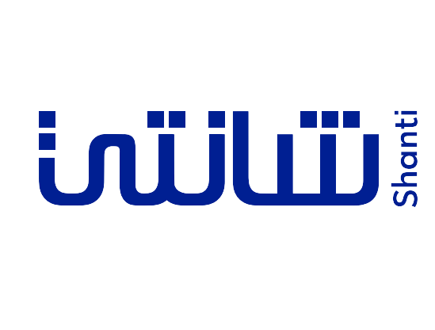
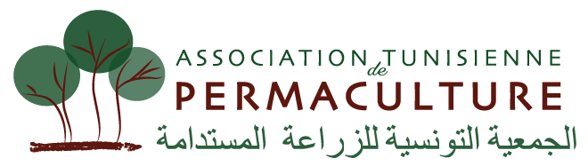

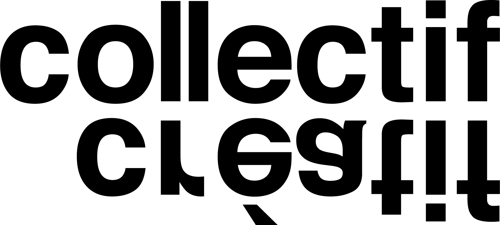
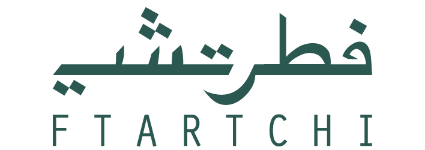
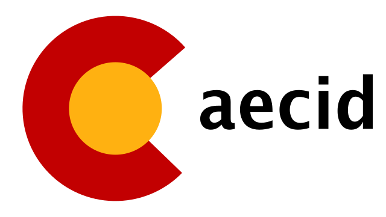
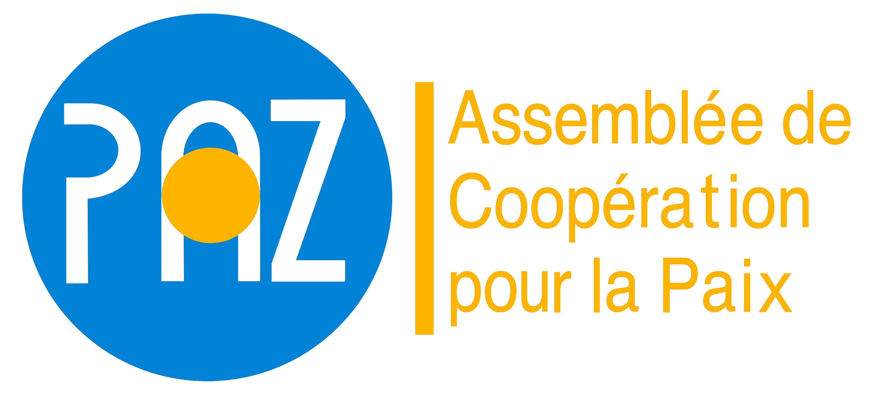
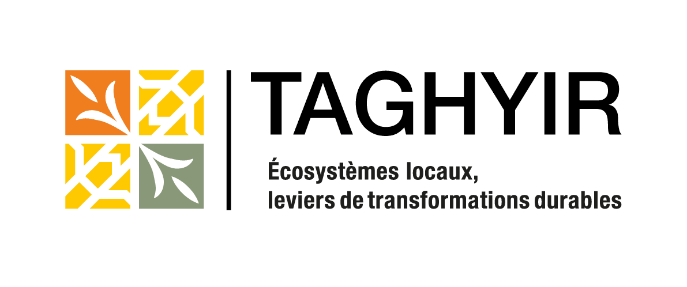
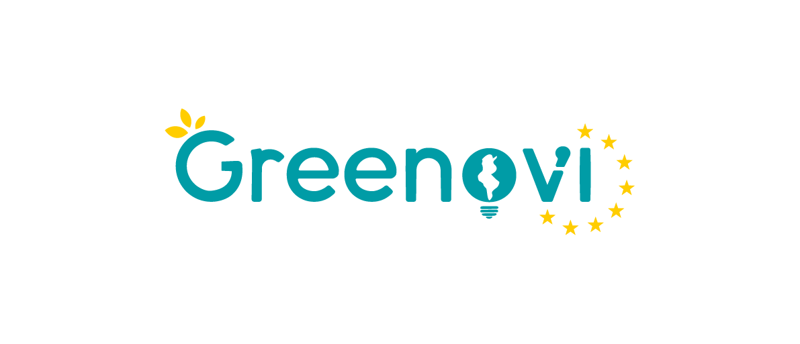
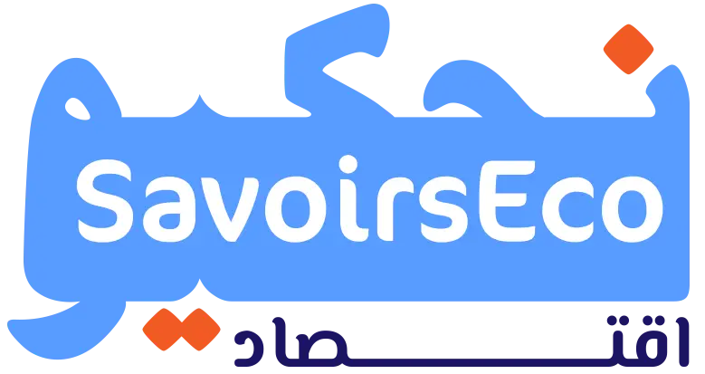
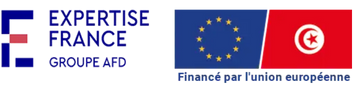
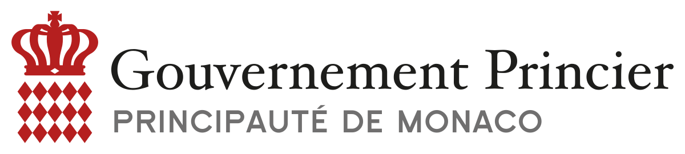